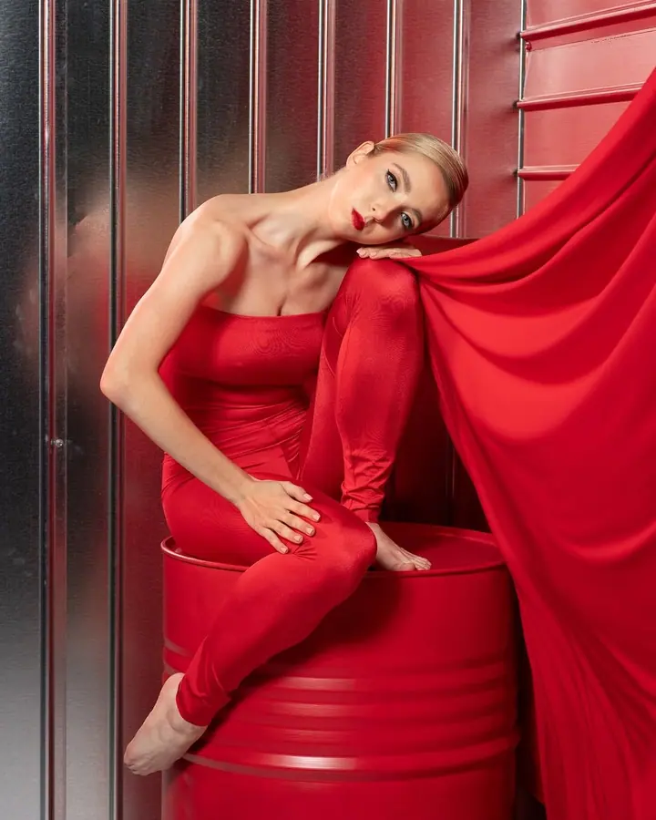
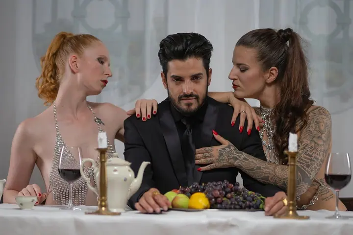

Portréty
Osobní a kreativní portréty, ve kterých hledám výraz, světlo a atmosféru. Fotím venku i v interiéru, v přírodě, ve městě, doma nebo v ateliéru.

Portrétní a fashion fotograf
Jmenuji se Jiří Svoboda a v Havlíčkově Brodě fotím portréty, módu i akt. Každé focení beru jako spolupráci, při které hledám autenticitu a osobnost člověka před objektivem. Vedle toho rád fotím koncerty, kulturní akce a reportáže.
Zeptat se na termín
Osobní a kreativní portréty, ve kterých hledám výraz, světlo a atmosféru. Fotím venku i v interiéru, v přírodě, ve městě, doma nebo v ateliéru.
Módní a stylizované focení pro tvůrce, modely a značky. Společně nastavíme koncept, styl i atmosféru, aby fotky měly jasný charakter.
Citlivé focení postavené na důvěře a klidu. Pracuji se světlem a tvarem těla bez spěchu, aby se před objektivem dalo opravdu uvolnit.
Jsem portrétní a fashion fotograf se zaměřením na výraz, světlo a atmosféru. Věřím, že silný portrét nevzniká ve spěchu. Důležitá je důvěra, klid a prostor, aby si fotograf a model opravdu sedli.
Působím především na Vysočině a v Havlíčkově Brodě, kde se věnuji portrétní, módní a kreativní fotografii. Vedle toho realizuji reportáže, kulturní akce a dokumentární projekty. Za zajímavým projektem rád přijedu i do Prahy.
Fotím jednotlivce, tvůrce a umělce, podnikatele i značky. Na minuty se nedívám, víc mi záleží na tom, abychom spolu vytvořili fotky, které budou opravdu fungovat. A pokud máte zajímavý nápad, stále nabízím i TFP focení.
Společně nastavíme styl, atmosféru a cíl focení. Probereme i oblečení a rekvizity, vlastní věci rád uvítám.
Fotíme bez zbytečného časového tlaku, v přírodě, ve městě, doma nebo v ateliéru. Místo si volíte vy, rád poradím.
Pomohu vám s výrazem, pózou i přirozeným pohybem, abyste se před objektivem cítili dobře.
Po focení vám zpřístupním uzavřenou galerii, ze které si vyberete fotky podle balíčku. Ty pak pečlivě upravím a předám elektronicky.
Hotové fotky obvykle doručím do 2 až 3 týdnů od focení. U rozsáhlejších zakázek, jako jsou reportáže nebo svatby, se termín může prodloužit, vždy se ale předem domluvíme.
Balíček Mini s 10 upravenými fotkami vychází na 1 800 Kč, Standard s 20 fotkami na 2 800 Kč a Premium se 40 fotkami na 4 500 Kč. Fashion, glamour a akt, reportáže nebo koncerty naceňuji individuálně podle rozsahu.
Nevadí. Počasí nikdo neovlivní, takže termín přesuneme bez poplatku.
Primárně působím v Havlíčkově Brodě a na Vysočině. Focení mimo region domlouvám individuálně, za zajímavým projektem rád přijedu třeba do Prahy.